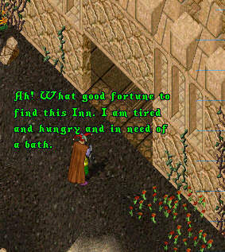
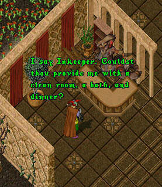
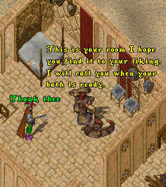
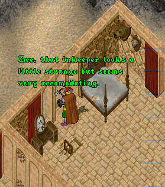
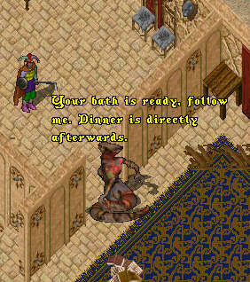
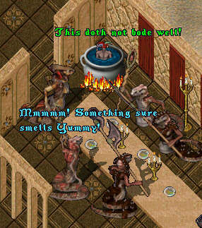
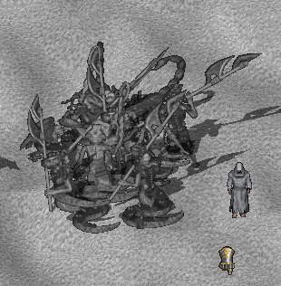

Episode 78: A Room with a View. As this episode opens ImaNewbie, tired, hungry, and in need of a good hot bath stumbles upon what seems to be a nice inn in the north of the New Lands. This one has a bonus screenshot at the end.






Bonus: Here is a little unretouched screenshot of what actually happened the first time that ImaNewbie visited this very same area online, the building shown in the toon above is just to the right. Needless to say I did not survive the ordeal, my corpse is somewhere underneath the pile.
